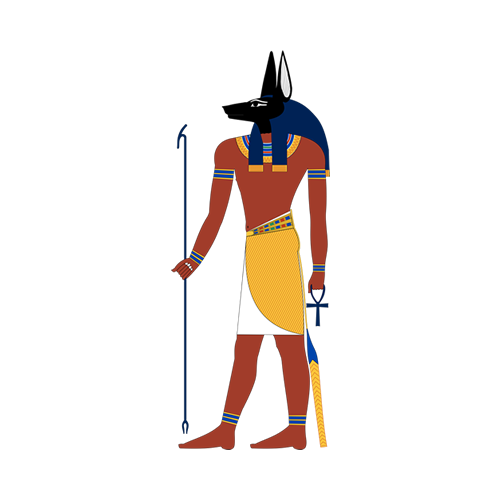

Anúbis
O Deus da morte
História do Personagem
Anúbis, também chamado de Anupo, é o deus egípcio protetor, guardião e guia dos mortos. Na mitologia egípcia, ele auxilia os mortos no encontro com Osíris. Para isso, é associado ao olho de Hórus e também apontado como o deus dos ritos funerários, como o processo de mumificação dos faraós.
- O culto a Anúbis teria começado entre os anos 3100 a.C. e 2686 a.C.
- A sua origem é o Egito antigo